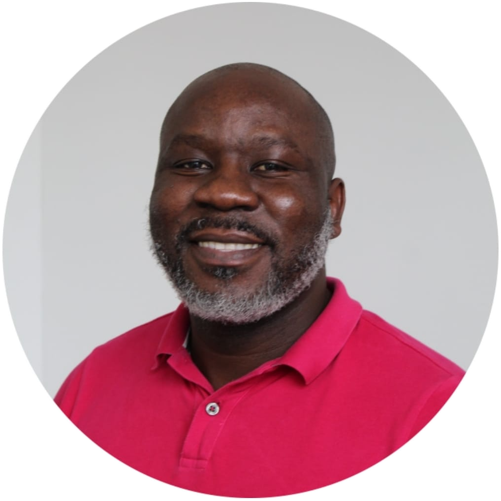

Empowering a sustainable and prosperous Africa through innovative business solutions.
The Africa Institute for Sustainability and Business is a leading research, training, and consulting organization dedicated to promoting sustainable development and business excellence in Africa. Our team of experts works closely with businesses, governments, and civil society organizations to develop and implement sustainable solutions that drive economic growth, social prosperity, and environmental stewardship.
Our Expertise:
Sustainability research and policy analysis
Capacity building and training programs
Consulting services for sustainable business growth and development
Event management and conference organization
Our Goals:
Advance sustainable development goals in Africa
Foster a culture of sustainability in business and government
Support entrepreneurship and innovation in Africa
Build partnerships for collective impact
Values:
Sustainability: We prioritize environmental, social, and economic sustainability in all our endeavors.
Innovation: We embrace creativity and innovation in finding solutions to Africa's unique challenges.
Collaboration: We believe in partnerships and knowledge sharing to drive collective impact
Excellence: We strive for excellence in all our programs and services.
Objectives:
Conduct research on sustainable business practices and their impact on African economies.
Develop and offer training programs for businesses, governments, and civil society organizations.
Provide consulting services to support sustainable business growth and development.
Foster partnerships with local and international organizations to advance sustainable development goals.
Mission:
To empower a sustainable and prosperous Africa through innovative business solutions. To provide cutting-edge research, training, and consulting services that foster sustainable development and business excellence in Africa.
Benjamin Manyiyo CBD

Dr Blessing Silaigwana Head Research and Development Director